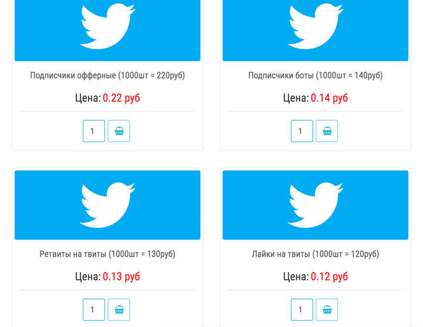
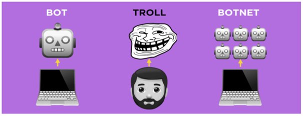
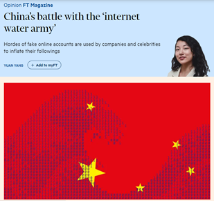
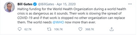
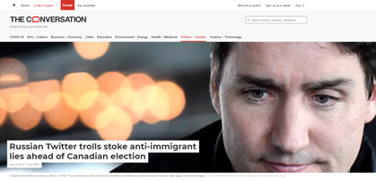

Za udeležence
Za izvajalce
Trainees Edition
Trainers Edition
MODUL 4: VLOGA INTERNETA in DRUŽBENIH MEDIJEV pri USTVARJANJU INFORMACIJSKE ONESNAŽENOSTI
Opis modula
Glavni namen tega modula je razložiti vlogo interneta in družbenih medijev pri ustvarjanju informacijske onesnaženosti in verodostojnosti spletnih uporabnikov.
Sekundarni namen je usmerjati izvajalce usposabljanja, ki želijo vsebino tega modula uporabiti pri usposabljanju svojih udeležencev.
S temi cilji je predstavljen vpliv interneta in družbenih medijev na informacijsko onesnaževanje skupaj s smernicami, kako poučevati to temo.
Udeleženci, ki bodo uspešno zaključili ta modul, bodo znali:
- razumeti vlogo interneta in družbenih medijev pri ustvarjanju informacijskega onesnaževanja
- prepoznati verodostojnost spletnih uporabnikov
- prepoznati neavtentično spletno vedenje
- opredeliti in razlikovati med troli, boti in kiborgi
- razumeti motivacijo za neavtentične spletne dejavnosti
Poleg tega bodo izvajalci usposabljanja, ki bodo uspešno zaključili ta modul, lahko pokazali, da razumejo, kako poučevati vlogo interneta in družbenih medijev pri ustvarjanju informacijske onesnaženosti in zaupanja vrednih spletnih uporabnikov.
Struktura modula
Ta modul je sestavljen iz naslednjih delov:
- Cilj, opis vsebine in učni rezultati
- Struktura modula
- Smernice za udeležence
- Smernice za izvajalce usposabljanja (kako se pripraviti, metode, nasveti za izvajalce usposabljanja)
- Vsebina (gradivo in vaje)
- Kviz
- Viri (reference in priporočeni viri ter videoposnetki)
Glavni cilji modula, opis vsebine in učni rezultati so pojasnjeni v delu Opis modula. Smernice za udeležence usposabljanja vključujejo navodila in predloge za udeležence izobraževanja. Smernice za izvajalce usposabljanja vodijo izvajalce usposabljanja skozi različne faze usposabljanja in vsebujejo nasvete, ki bi lahko bili koristni pri poučevanju predmeta. Vsebina vključuje vsa študijska gradiva in vaje, povezane z vsebino. Kviz vključuje vprašanja z več možnostmi izbire in resnična/nepravilna vprašanja, s katerimi lahko udeleženci usposabljanja preverijo svoj napredek. Viri vsebujejo dve komponenti: reference in priporočene vire za nadaljnje branje in študij. Reference so seznam virov, navedenih v vsebinskem delu. Priporočeni viri so sestavljeni iz seznama dodatnih virov in videoposnetkov, ki jih priporočamo za branje in gledanje, da bi se naučili več o temi.
Smernice za udeležence
Udeleženci morajo prebrati besedilo, si ogledati priporočene videoposnetke in izvesti vaje. Za dodatne informacije lahko poiščejo predlagane vire. Udeležencem se priporoča, da po končanem študiju vsebine opravijo kviz, s katerim bodo ocenili svoj napredek. Po potrebi lahko ponovno pregledajo študijsko gradivo.
Smernice za izvajalce usposabljanja
Smernice za izobraževalce vključujejo predloge in nasvete o tem, kako predstaviti vsebino tega modula odraslim.
Priprava
Priporočamo pripravo predstavitve (PowerPoint/Prezi/Canva), obogatene z vizualnim gradivom (slike in videoposnetki) in jasnimi primeri. Predlagamo tudi, da primere in vaje iz tega modula prilagodite vprašanjem, ki so bolj znana dejanski ciljni skupini. Izbira lokalnih primerov (specifičnih za posamezno državo) v zvezi z aktualnimi ali dobro znanimi vprašanji pomaga jasneje ponazoriti določeno točko. Prav tako pomaga pritegniti pozornost udeležencev usposabljanja. Bolj kot so primeri znani in priljubljeni, bolje bo sporočilo posredovano.
Kako začeti
Na začetku lahko uporabite kratek kviz (3 do 5 vprašanj) v programu Kahoot ali vprašanja z Mentimetrom, da udeležence pritegnete k temi. Uporablja se lahko kot motivacijsko orodje in tudi kot orodje za preverjanje obstoječega znanja udeležencev o temi. Nekateri primeri vprašanj so lahko naslednji: Kaj je trol? Kaj je bot?
Učne metode
Med usposabljanjem se lahko kombinirajo različne učne metode. Na primer:
- predavanje
- diskusija
- delo v skupinah
- samorefleksija
Nasveti za izobraževalca
Ogrevanje
Učinkovit način vključevanja udeležencev in določanja skupnih pričakovanj o tem, kaj se bodo naučili, je postaviti nekaj predhodnih vprašanj o temi. To lahko storite s skupinskim delom, tako da udeležence usposabljanja pozovete k razpravi in zbiranju idej, lahko pa tudi individualno, tako da vsakega udeleženca prosite, naj svoje ideje zapiše na samolepilne lističe. Dejavnost se lahko izvede na naslednji način:
- Udeležence vprašajte, ali so kdaj naleteli na neavtentično dejavnost v družabnih medijih. Zakaj menijo, da je bila neavtentična?
- Povabite udeležence usposabljanja, da dane primere razvrstijo v kategorije in razložijo, v čem se razlikujejo.
Jasno je treba opredeliti cilj (to je pojasniti vlogo interneta in družbenih medijev pri ustvarjanju informacijske onesnaženosti in zaupanja vrednih spletnih uporabnikov). Po ogrevalnih vprašanjih bo lažje pojasniti cilje.
Predstavitev učnih vsebin
Med predstavljanjem vsebine poskrbite za interakcijo z udeleženci in jih spodbudite k aktivnemu sodelovanju.
- Preden podate opredelitev trolov, botov in kiborgov, prosite udeležence, naj sami oblikujejo svojo.
- Pri predstavitvi običajnih oblik neavtentičnih dejavnosti in računov udeležence prosite, naj navedejo primere iz resničnega življenja. Primere komentirajte ne glede na to, ali spadajo v kategorijo, o kateri govorite, ali ne.
- Pri navajanju primerov izberite primere iz resničnega sveta in pridobite čim več informacij o tem konkretnem primeru. Tako boste lahko na vprašanja udeležencev odgovorili z več podrobnostmi.
- Ko izbirate primere, se v izogib zmedi prepričajte, da stoodstotno ustrezajo opredelitvi kategorije, ki jo obravnavate.
- Ustvarite priložnosti za praktično vadbo za udeležence usposabljanja, kadar koli je to mogoče.
Zaključek
Naredite kratek povzetek učne ure in postavite nekaj vprašanj, ki bodo pomagala razbrati najpomembnejša sporočila, ki jih želite posredovati.
Pri tem so vam lahko v pomoč naslednja vprašanja:
- Vprašajte udeležence usposabljanja, kako bi se odzvali, če bi posumili na neavtentično dejavnost.
Ob zaključku se prepričajte, da udeleženci razumejo, da v družbenih medijih obstajajo lažni uporabniški računi in da se za neavtentičnimi dejavnostmi skrivajo nameni (predvsem manipulacija).
Vsebina: Vloga interneta in družbenih medijev pri ustvarjanju informacijske onesnaženosti
Uvod
Pojav interneta in tehnologij družbenih medijev je povzročil temeljne spremembe v načinu pridobivanja, sporočanja in razširjanja informacij. Široko dostopna, poceni in izpopolnjena orodja za urejanje in objavljanje ter tehnologija so vsakomur olajšali ustvarjanje vsebin in hitro izmenjavo informacij. Posledično so danes napačne informacije/dezinformacije našle nov kanal (Wardle in Derakhshan, 2017, str. 11-12; Tandoc, Lim in Ling, 2018, str. 139).
Danes se ni spremenilo le to, kako se novice razširjajo, temveč tudi to, kako so videti. Tvit, dolg največ 280 znakov, zdaj velja za novico, Twitter pa je postal platforma zlasti za hitro razširjanje svežih novic. Facebook je še ena platforma družbenih medijev, ki je postala prostor, kjer uporabniki ustvarjajo, berejo in izmenjujejo novice skupaj z informacijami in fotografijami iz zasebnega življenja (Tandoc, Lim in Ling, 2018, str. 139).
Vse spletne platforme, zlasti družbeni mediji, zagotavljajo prostor, kjer lahko ne-novinarji dosežejo množično občinstvo, oz. zagotavljajo priložnosti za državljansko novinarstvo. Ne-novinarji so se danes začeli vključevati v novinarske dejavnosti (Robinson & DeShano, 2011, str. 965). Prek svojih računov na družbenih omrežjih objavljajo informacije, fotografije in videoposnetke o izrednih novicah, ki so jim bili priča (Jewitt, 2009, str. 231).
Družbeni mediji oblikujejo medijsko krajino na več načinov. Prvič, vsebine različnih ponudnikov novic so prikazane na enem mestu, uporabnikom ni več treba izbrati vira novic, temveč izberejo zgodbo samo (Messing in Westwood, 2014, str. 1044). Vir informacij je zabrisan, saj novice/informacije hitro potujejo od ene osebe/kanala do druge (Tandoc, Lim & Ling, 2018, str. 139). Drugič, pri izbiri vsebine so vodilo, potrditve in družbena priporočila (Messing & Westwood, 2014, str. 1044). Pri razširjanju ima pomembno vlogo tudi priljubljenost. Všečki, delitve ali komentarji sprožijo nadaljnje všečke, delitve ali komentarje (Thorson, 2008, str. 475).
Poleg tega za razliko od starih novičarskih medijev ni etičnega kodeksa o deljenju manipuliranih vsebin v družbenih medijih (Tandoc, Lim & Ling, 2018, str. 144-145), prav tako pa obstajajo težave (ki včasih zahtevajo strokovno znanje) pri preverjanju informacij v različnih oblikah, kot so fotografije in videoposnetki.
Napačne informacije/dezinformacije so obstajale že pred tiskarskim strojem, vendar je internet omogočil, da se laži, teorije zarote in pretiravanja širijo hitreje in dlje kot kdaj koli prej (Klepper, 7. februar 2020).
Verodostojnost spletnih uporabnikov
Verodostojnost uporabnikov spletnih skupnosti je še ena težava (Ortega, Troyano, Cruz, Vallejo in Enriquez, 2012, str. 2884). Vsa orodja in tudi nadarjenost za njihovo uporabo so danes naprodaj. Vsakdo lahko kupi na tisoče računov v družbenih medijih ali milijone elektronskih naslovov in najame pisce (plačane oglaševalce), ki bodo pomagali množično razširjati katero koli sporočilo ali ideologijo (Filloux, 2017).
Obstajajo podjetja in posamezniki, ki po ugodnih cenah za Twitter, Facebook in YouTube odkrito prodajajo sledilce/naročnike in vključenost, ponovne tvite in deljenje objav (Barojan, 5. november 2018).

Družbeni mediji se vse pogosteje uporabljajo za širjenje lažnih trditev in polarizacijo ljudi glede spornih vprašanj. Kiborgi, troli in boti ogromno prispevajo k onesnaževanju informacij na spletu, saj ga polnijo z dezinformacijami (Klepper, 7. februar 2020).

Troli in farme oz. tovarne trolov
Beseda trol se nanaša na ljudi, ki namerno sprožajo spletne konflikte ali žalijo druge uporabnike, da bi odvrnili pozornost in zasejali delitve z objavljanjem vnetljivih ali ne tematskih objav v spletni skupnosti ali družbenem omrežju (Barojan, 5. november 2018; Wardle, 2018). Cilj je spodbuditi druge k čustvenemu odzivu in iztiriti razprave, včasih za lastno zabavo, včasih pa kot del usklajene kampanje (Klepper, 7. februar 2020). Organizirana skupina spletnih trolov se imenuje farma trolov ali tovarna trolov.
Včasih so troli za širjenje informacij plačani. Ustvarijo lahko pomemben (negativen/pozitiven) učinek na spletne skupnosti (Chen, Wu, Srinivasan in Zhang, 2013). Tako ustvarjena propaganda pogosto temelji na dejstvih, vendar vključuje pristranskost, ki spodbuja določen izdelek, stran ali stališče. Cilj takšnega mešanja novic in komentarjev je pogosto prepričevanje in ne informiranje (Tandoc, Lim & Ling, 2018, str. 147).
Internet Water Army s Kitajske je na primer skupina, ki je plačana za objavljanje spletnih komentarjev z določeno vsebino na internetu. Te ljudi rekrutirajo podjetja, da na nekaterih spletnih platformah promovirajo pozitivne novice o njihovih izdelkih in negativne novice o konkurentih (Internet Water Army, 2020). Po drugi strani je 50 Cent Party/Army skupina komentatorjev, ki jih najemajo kitajske oblasti, da bi manipulirali z javnim mnenjem v korist kitajske komunistične partije. Ugotovitve harvardske raziskave ocenjujejo, da kitajska vlada vsako leto izdela približno 448 milijonov objav na družbenih omrežjih (King, Pan in Roberts, 2017; 50 Cent Party, 2020).

V zadnjem času je uporaba internetnih trolov za manipulacijo z mnenjem postala običajna praksa. Priljubljen način "trolanja" je objavljanje spornih objav na določeno temo iz lažnih profilov, katerih cilj je za vsako ceno zmagati v sporu, običajno jih spremljajo netočne in zavajajoče informacije (Mihaylov, Koychev, Georgiev in Nakov, 2015, str. 443).
Primer: Bill Gates je bil tarča trolov
Napadi na družbenih omrežjih proti Billu Gatesu so se okrepili aprila 2020, ko je na Instagramu objavil videoposnetek, na katerem je v okno obesil napis "Hvala zdravstvenim delavcem". V naslednjih dneh je bila objava zasuta z več sto tisoč komentarji, ki so ga povezovali z različnimi teorijami zarote, povezanimi s cepivi, Svetovno zdravstveno organizacijo (WHO) in vstavljenimi mikročipi. Napadi so se okrepili naslednji teden, ko je kritiziral odločitev Trumpove administracije, da ustavi financiranje Svetovne zdravstvene organizacije. V 24 urah po komentarjih Billa Gatesa je bil njegov račun na Twitterju omenjen vsaj 270.000-krat –30-krat več od povprečja – predvsem s strani jeznih podpornikov predsednika Trumpa (Stronder, 21. maj 2020).
 |
|
Primer: Troli so pred volitvami leta 2017 poskušali vnesti razdor med Kanadčane
Ugotovitve raziskave, opravljene na 18.533 tvitih od januarja do februarja 2017, kažejo, da so troli pred volitvami leta 2017 skušali podžigati delitve med Kanadčani s tvitanjem lažnih novic in islamofobičnih izjav po streljanju v mošeji v Québecu leta 2017 (Al-Rawi & Jiwani, 23. julij 2019).

Trol se razlikuje od bota, ker je trol pravi uporabnik, medtem ko so boti avtomatizirani. Trolanje kot dejavnost ni omejeno samo na trole. Troli včasih uporabljajo bote, da okrepijo nekatera svoja sporočila. Tako se lahko boti uporabljajo za namene trolanja (Barojan, 5. november 2018).
Srivni računi (angl. Sock Puppet Accounts)
Gre za vrsto lažnega računa. Medtem ko nekateri uporabniki uporabljajo anonimne račune samo zato, da se ne bi identificirali, pa lastnik izmišljenega računa račun uporablja za napadanje kritikov ali hvaljenje samega sebe (Klepper, 7. februar 2020).
Primer: Račun lutke iz nogavice senatorja ZDA
Senator iz ameriške zvezne države Utah Mitt Romney je priznal, da je upravljal skrivni račun na Twitterju pod imenom "Pierre Delecto", ki ga je uporabljal za obrambo pred kritikami (Klepper, 7. februar 2020).
Boti in botneti
Bot je avtomatiziran račun v družbenih medijih, ki ga upravlja algoritem in ne prava oseba. Z drugimi besedami, bot je zasnovan tako, da objavlja objave brez človeškega posredovanja. Trije ključni kazalniki botov so anonimnost, visoka stopnja aktivnosti in krepitev določenih uporabnikov, tem ali ključnikov (Barojan, 5. november 2018). Medtem ko avtentični uporabniki Twitterja pogosto objavljajo nekajkrat na dan o različnih temah, boti tvitajo več sto krat na dan in pogosto samo o določeni temi. Bolj verjetno je, da bodo vsebino ponovno objavili, kot da bi ustvarili nekaj izvirnega (Klepper, 7. februar 2020). Boti lahko uporabljajo ključnike in objavljajo vsebine, ki lahko na koncu vplivajo na algoritem različnih platform družbenih medijev (Stronder, 21. maj 2020).
Če račun piše posamezne objave in komentira, odgovarja ali kako drugače sodeluje z objavami drugih uporabnikov, ga ni mogoče uvrstiti med bote. Bote večinoma najdemo na Twitterju in drugih družbenih omrežjih, ki uporabnikom omogočajo ustvarjanje več računov (Barojan, 5. november 2018).
V dezinformacijskih kampanjah se lahko boti uporabljajo za opozarjanje na zavajajoče pripovedi, prevzemanje seznamov trendov platform ter ustvarjanje iluzije javne razprave in podpore (Wardle, 2018). Raziskovalci z Univerze Južne Kalifornije so v eni od raziskav analizirali tvite, povezane z ameriškimi volitvami, poslane septembra in oktobra 2016, in ugotovili, da je enega od petih poslal bot (Klepper, 7. februar 2020).
Primer: Med izbruhom pandemije so približno 45 % tvitov poslali boti
Po podatkih raziskovalcev z univerze Carnegie Mellon je skoraj polovica računov Twitter, ki so na platformi družbenih medijev širili sporočila o pandemiji koronavirusa, verjetno botov. Raziskovalci so na začetku izbruha pandemije pregledali več kot 200 milijonov tvitov o virusu in ugotovili, da so jih približno 45 % poslali računi, ki se obnašajo bolj kot boti. Raziskovalci so ugotovili več kot 100 vrst netočnih zgodb o virusu COVID-19, kot so tiste o morebitnih zdravilih. Boti so prevladovali tudi v pogovorih o ukinitvi ukrepov za ostajanje doma in "ponovnem odprtju Amerike" (Young, 27. maj 2020).
Vir: Young, May 27, 2020/ |
Botnet je omrežje bot računov, ki jih upravlja isti posameznik ali skupina. Tisti, ki upravljajo botnete, ki pred vzpostavitvijo zahtevajo prvotni človeški prispevek, se imenujejo ''bot herderji'' ali pastirji. Cilj botnetov je, da se o ključniku, uporabniku ali ključni besedi govori več (pozitivno ali negativno) ali da je bolj priljubljena, kot je v resnici. Boti ciljajo na algoritme družbenih medijev, da bi vplivali na rubriko trendi, kar bi nič hudega sluteče uporabnike izpostavilo pogovorom, ki jih okrepijo boti. Botneti redko ciljajo na človeške uporabnike, kadar pa to storijo, gre za pošiljanje neželene pošte ali splošno nadlegovanje, ne pa za aktivne poskuse spreminjanja njihovega mnenja ali političnih stališč (Barojan, 5. november 2018).
Primer: Pred malezijskimi volitvami so bile zaznane dejavnosti botov
Pred volitvami v Maleziji je DFRLab odkril 22.000 botov, ki so vsi uporabljali popolnoma enak vzorec govora. Vsak bot je uporabljal dva ključnika, usmerjena proti opozicijski koaliciji, poleg tega pa je označil od 13 do 16 resničnih uporabnikov, da bi jih spodbudil k vključitvi v pogovor (Barojan, 5. november 2018).
Kiborgi
Kiborg je neke vrste hibridni račun, ki združuje neutrudnost bota s človeško prefinjenostjo. Računi kiborg so tisti, pri katerih človek občasno prevzame račun bota, da se odziva na druge uporabnike in objavlja izvirno vsebino. Njihovo upravljanje je dražje in zamudnejše, vendar jih je veliko težje ujeti in odkriti (Klepper, 7. februar 2020).
Vaja
Trol je pravi uporabnik, medtem ko je bot avtomatiziran. Bota vodi algoritem in ne resnična oseba. Bot je zasnovan tako, da objavlja objave brez posredovanja človeka, medtem ko je kiborg neke vrste hibridni račun, ki združuje bota in pravo osebo.
Kviz
Reference
50 Cent Party. (2020). In Wikipedia.
Al-Rawi, A. & Jiwani, J. (July 23, 2019). Russian Twitter trolls stoke anti-immigrant lies ahead of Canadian election. The Conversation.
Barojan, D. (November 5, 2018). How to Identify Bots, Trolls, and Botnets. Global Investigative Network.
Benson, T. (April, 24, 2020). Trolls and bots are flooding social media with disinformation encouraging states to end quarantine. Insider.
Chen, C., Wu, K., Venkatesh, S. & Zhang, X. (2013). Battling the Internet Water Army: Detection of hidden paid posters. Proceedings of the 2013 IEEE/ACM International Conference on Advances in Social Networks Analysis and Mining. Niagara, Canada: ACM.
Feinberg, A. (October 20, 2019). This sure looks like Mitt Romney’s secret Twitter account (Update: It is): Meet “Pierre Delecto”. The Slate. https://slate.com/news-and-politics/2019/10/mitt-romney-has-a-secret-twitter-account-and-it-sure-looks-like-its-this-one.html
Filloux, F. (2017). You can’t sell news for what it costs to make. The Walkley Magazine on Medium.
Internet Water Army. (2020). In Wikipedia.
Jewitt, R. (2009). The trouble with twittering: Integrating social media into mainstream news. International Journal of Media & Cultural Politics, 5(3), 233–246. doi:10.1386/- macp.5.3.233_3
King, G., Pan, J. & Roberts, M. E. (2017). How the Chinese government fabricates Social Media posts for strategic distraction, not engaged argument. American Political Science Review, 111(3), 484-501. DOI: 10.1017/S0003055417000144
Klepper, D. (February 7, 2020). Cyborgs, trolls and bots: A guide to online misinformation.
Messing, S., & Westwood, S. J. (2014). Selective exposure in the age of social media: Endorsements trump partisan source affiliation when selecting news online. Communication Research, 41(8), 1042-1063.
Mihaylov, T., Koychev, I., Georgiev, G.D. & Nakov, P. (2015). Exposing paid opinion manipulation trolls. In: Proceedings of Recent Advances in Natural Language Processing (pp. 443–450), Hissar, Bulgaria, Sep 7–9 2015.
Ortega, F. J., Troyano, J., Cruz, F., Vallejo, C. & Enriquez, F. (2012). Propagation of trust and distrust for the detection of trolls in a social network. Computer Networks. 56. 2884-2895. 10.1016/j.comnet.2012.05.002.
Robinson, S., & DeShano, C. (2011). ‘Anyone can know’: Citizen journalism and the interpretive community of the mainstream press. Journalism, 12(8), 963–982. doi:10.1177/1464884911415973.
Seetharaman, D. (April 17, 2020). Bill Gates is targeted by Social-Media mobs. The Wall Street Journal.
Schlosser, K. (April 15, 2020). Bill Gates calls Trump’s freeze on WHO funding ‘dangerous’ and tweet draws a viral response. GeekWire.
Stronder (May 21, 2020). Fighting disinformation, trolls, and bots on social media during COVID-19.
Tandoc, E.C., Lim, Z. W. & Ling, R. (2018). Defining “fake news”. Digital Journalism, 6(2), 137-153. DOI: 10.1080/21670811.2017.1360143
Thorson, E. (2008). Changing patterns of news consumption and participation. Information, Communication and Society, 11(4), 473–489. doi:10.1080/13691180801999027.
Wardle, C. & Derakhshan, H. (2017). Information disorder: Toward an interdisciplinary framework for research and policymaking. The Council of Europe.
Wardle, C. (2018). The Essential Glossary.
Young, V. A. (May 27, 2020). Nearly half of the Twitter accounts discussing 'reopening America' may be bots. Carnegie Mellon University News.
Yang, Y. (August 1, 2018). China’s battle with the internet water army.
Priporočeni viri
Barojan, D. (November 5, 2018). How to Identify Bots, Trolls, and Botnets. Global Investigative Network. https://gijn.org/2018/11/05/how-to-identify-bots-trolls-and-botnets/
DFR Lab. (August 29, 2017). #BotSpot: Twelve Ways to Spot a Bot: Some tricks to identify fake Twitter accounts.
Klepper, D. (February 7, 2020). Cyborgs, trolls and bots: A guide to online misinformation.
Wild, J. & Godart, C. (2020). Spotting bots, cyborgs and inauthentic activity. In C. Silverman (Ed.). Verification Handbook for Disinformation and Media Manipulation, 3rd Ed. European Journalism Centre.
Zadrozny, B. (2020). Investigating social media accounts. In C. Silverman (Ed.). Verification Handbook for Disinformation and Media Manipulation, 3rd Ed. European Journalism Centre.
Priporočeni videoposnetki
Associated Press. (2020). Cyborgs, trolls and bots: AP explains online misinformation